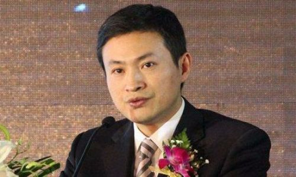

400-500-8888
时间：2016-04-21

文/蓝鲸TMT网 吴雅涵
昨日，蓝鲸TMT独家爆出苏宁易购执行副总裁李斌已经离职的消息，事后苏宁官方已证实李斌由于身体原因，需要长时间修养，即将离职。在苏宁与阿里联姻才两个月的节点下发生此事，不禁让人联想，此次离职，是否与传闻“李斌在苏宁阿里’婚后’改朝换代被架空”有关？
苏宁从传统零售商转型后，先后有三名高管的人事变动，其实际原因都趋于相同：
1.2011年8月，官方称凌国胜因身体原因已离职。但当时以及业内认为，凌国胜的离职与其未能完成任务目标有关。
2.2015年1月，金明不再担任苏宁云商总裁。彼时，有消息称辞职原因或与其所领导的苏宁云商连续11个季度营业利润下滑有关。
3.李斌从凌国胜手中接下重任后，也曾因业绩不达标被传已离职的消息。
而此次李斌离职的真实原因，是否是因其业绩不达标呢？苏宁的财报显示，苏宁易购2013年销售收入为218.9亿元，同比增长43.86%。而同年，京东销售收入为693.4亿元，是苏宁易购3倍以上的前提下，同比增加67.6%。苏宁易购2014年一季度的销售收入为33亿元，同比下降26.65%。从数据看，李斌的离职与业绩不佳或有关系。
但是2015 年上半年，苏宁云商互联网业务同比增长104.65%，实现利润总额4.72亿元，同比增加146.01％。可见，李斌离职的前半年业绩还不错（前提是李斌仍在主导工作），那么苏宁为什么选择在此时换人？
公司角色定位变化，或是导致高管调整原因
张近东曾在“婚礼”上表示，阿里和苏宁的合作是将一个从线上走向线下企业和一个从线下走向线上的融合。在里，联姻无非是双方可以在对方身上获得自身的需求。而阿里和苏宁的需求则是：阿里需要苏宁渠道，物流和供应链；苏宁需要阿里巨大的流量。但是，二者婚后真的如常所愿了吗？或许阿里才是利益既得者。
从国庆黄金周活动公开的数据显示，国庆黄金周期间苏宁线上线下实现销售翻番，物流小件商品妥投率达到98%，大配送完成率达99%以上。暂且不论该数据是否有注水的嫌疑，从表面看，在这次的活动里受益最多的是苏宁，因其销售额的暴涨增强了其线上平台构建的信心。
物流小件商品妥投率达到98%，大家电配送完成率达99%以上，这实际上考验的是苏宁的物流水平，阿里和苏宁合作的原因之一，也是看重这块资源。
这是一块重资产的业务，算是苏宁对双方联姻的一个贡献。对于苏宁来说，想要的无非是流量入口。如前文所述，国庆黄金周期间苏宁线上线下实现销售翻番。
短期的促销数字并不能说明太多的问题，但几乎可以肯定的是，阿里的导流开始发挥作用。
需要警惕的是，尽管如此，苏宁和京东为代表的前辈仍然具有较大的差距。最可怕的是，苏宁在弱化流量入口之后，有可能扮演的只是单纯“搬箱子”的体力活。
需要特别指出的是，京东也在做一些类似“搬箱子”的工作，但京东把流量入口抓在自己的手里。苏宁线下店销售惨淡门可罗雀已经成为现状，如果线上入口不能自己把控，未来的地位会比较尴尬。
一个现状就是：借助苏宁的仓储，门店以及配送的体系：用户在天猫超市下单购买的商品，送货的是苏宁的快递员，快递单上则印着天猫的标志。阿里提升了购物体验，而苏宁却扮演了单纯的”搬箱子“角色。
高管离职，能解决问题吗？
苏宁创办于1990年，苏宁的企业文化一直是“能者上、庸者下”。正因为在这样一个职业经理人的氛围之中，苏宁有着严格的KPI考核制度和体系。对于企业中的任何人来说，业绩考核都是一条红线门槛。
“业绩不达标就换人”也就成为了苏宁一个不成文的规定，但是换人就可以改变现状吗？从凌国胜的离职到现今李斌的离职，可以否定这个说法。那又将如何改变苏宁的现状？
业内人士在解析苏宁与阿里联姻原因里，其中有一个原因是苏宁想要将自身变成一个巨大的O2O电商，而阿里无疑是最大的线上平台。但这或许只是张近东的伟大愿景和幻想。
阿里不缺O2O布局。近几年，BAT对于O2O布局可以说不再少数，而阿里是涉足O2O最早的一家，也是布局链条最长的一家。在平台方面，阿里的布局有口碑网，聚划算和美团。
阿里不会成为苏宁的线上平台。阿里的模式，靠着强大的流量，吸引大量的商家，向它们卖取资源，收取租金和服务费来盈利。因此，阿里不可能会成将天猫商城电器只有苏宁的一家。相反，它还需要顾及其他品牌商的想法。
对于苏宁来说，做好重资产的搬箱子工作把流量入口交给阿里，似乎是各取所需。从这个角度来讲，换人对于苏宁来说其实可以理解，未来的工作重心有可能变化。
结束语：
李斌的离职能否拯救苏宁的关键不在于谁来接他的班，而是如何在于阿里合作中占得优势摆脱只扮演“搬箱子”角色的尴尬。蓝鲸TMT向苏宁官方确认，李斌之后的工作将暂时由苏宁云商COO候恩龙接替，而李斌将会进行长期的治疗休养状态。
Copyright © 2015-2016 Maker Cloud 创客云 版权所有粤ICP备32852599-1


 在线咨询
在线咨询 在线咨询
在线咨询 400-500-8888
400-500-8888